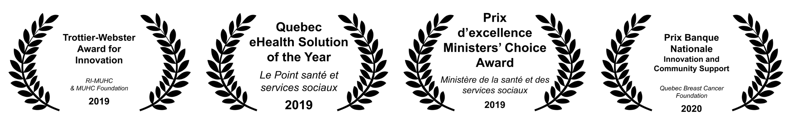
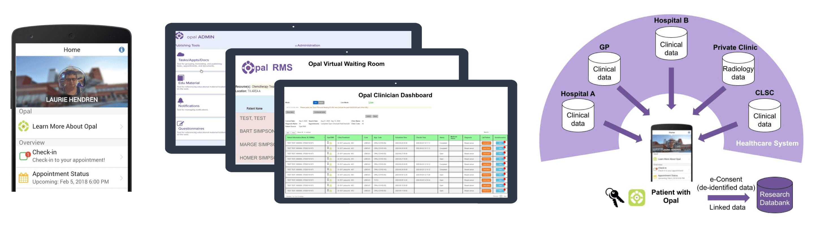
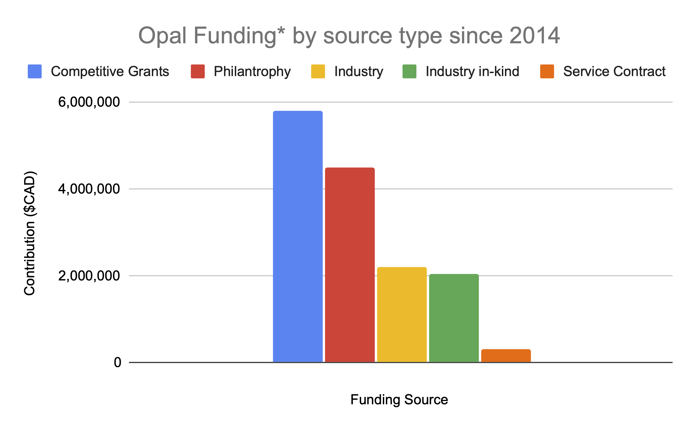

An Award-Winning Patient-Clinician Engagement Platform
brought to you by the Opal Health Informatics Group at the RI-MUHC

What is Opal?
Opal
is a suite of multi-institution patient-centered
software products designed, developed, and operated by
the Opal Health Informatics Group (OHIG). Opal is
operational at the MUHC and is being installed at CHU Ste-Justine.
Opal's use at the MUHC is supported by the Quebec SmartCare Consortium research grant (MEIE Fonds d'accélération des collaborations en santé, 2021-2024, prinicipal investigator: John Kildea).
Currently, Opal is not officially supported by the MUHC but is sustained via research funds.
The Components of Opal
- The Opal patient portal app
- The Opal Room Management System (ORMS)
- The Opal Admin publishing and user-management application
- The Opal Clinical Viewer dashboard
- The Quebec SmartCare Consortium
databank for Opal-sourced research data
Opal's Users at the MUHC
Since its first release in
2018, the Opal
patient portal app has been the only
hospital-based patient portal in Quebec. At the MUHC,
Opal is operational in the Cedars Cancer Centre, in the
IBD Clinic at the Montreal General Hospital, in the
Chronic Viral Illnesses Service of the Royal Victoria
Hospital, and in the Nephrology Clinic of the Montreal
Children's Hospital. As of July 2023, the Opal patient
portal has 5,300 registered users, mainly at the Cedars
Cancer Centre.
ORMS is used by almost all
clinicians and all patients in the Cedars Cancer Centre
on a daily basis. To date (since 2015), almost one million patient
appointments have been managed by ORMS.
The Opal Health Informatics Group
Story
|
The OHIG is a unique
research collaboration that was co-founded by an
RI-MUHC researcher (Prof. John Kildea, medical
physicist), a cancer patient who was also a
computer science Laurie
sadly succumbed to her cancer in 2019 but
her legacy lives on in Opal and in the OHIG. Today,
the OHIG consists of 22 members. John Kildea
is the principal investigator and Tarek Hijal
is the clinical lead. |
The Opal Health Informatics Group at the RI-MUHC (February 2023).
Funding for Opal
The development and
operation of Opal has been possible due to the generous
support of hospital foundations and competitive research
grants. The logos of Opal's funding partners are found
at the bottom of this page. The breakdown of funding
received to support Opal since the project began in 2014
is shown in the graphs below.
|  |
 |